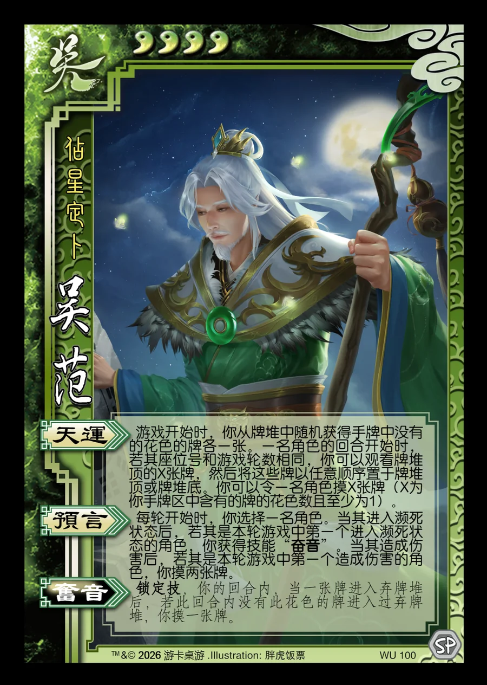

点击卡面查看大图
吴
吴范
♥4占星定卜
天运
游戏开始时，你从牌堆中随机获得手牌中没有的花色的牌各一张。一名角色的回合开始时，若其座位号和游戏轮数相同，你可以观看牌堆顶的X张牌，然后将这些牌以任意顺序置于牌堆顶或牌堆底。你可以令一名角色摸X张牌（X为你手牌区中含有的牌的花色数且至少为1）。
预言
每轮开始时，你选择一名角色。当其进入濒死状态后，若其是本轮游戏中第一个进入濒死状态的角色，你获得技能“奋音”。当其造成伤害后，若其是本轮游戏中第一个造成伤害的角色，你摸两张牌。
奋音锁定技衍生
锁定技，你的回合内，当一张牌进入弃牌堆后，若此回合内没有此花色的牌进入过弃牌堆，你摸一张牌。